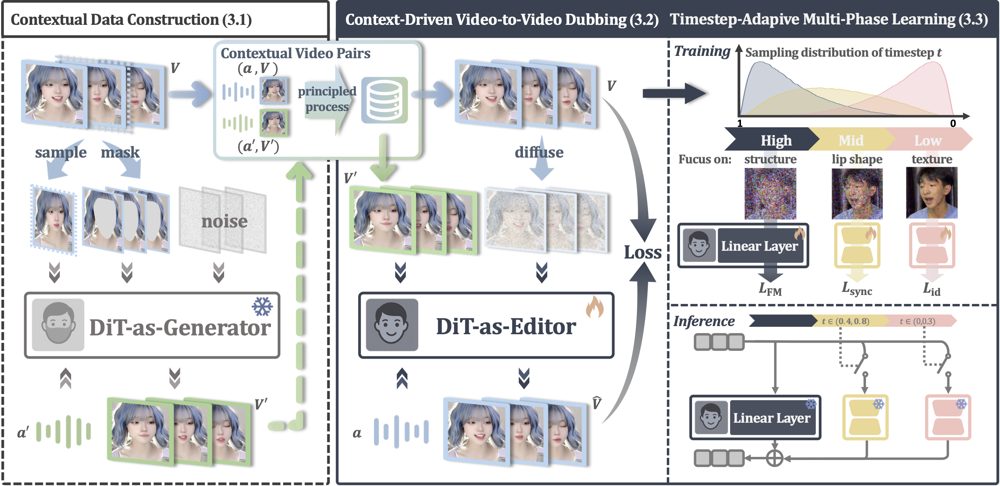

Demo Video
TL;DR: X-Dub achieves precise, natural video lip-sync editing with strong identity preservation, robust under occlusions, lighting changes, and stylized characters, powered by a self-bootstrapping context-rich paradigm.
Method Overview
Overview of X-Dub, our self-bootstrapping dubbing framework. At its core, our paradigm employs a DiT generator to create a lip-altered counterpart for each video, forming a context-rich pair with the original (left). A DiT editor then learns mask-free, video-to-video dubbing directly from these ideal pairs, leveraging the complete visual context to ensure accurate lip synchronization and identity preservation (middle). This contextual learning is further refined by our timestep-adaptive multi-phase learning (right), which aligns different diffusion stages with learning distinct information: global structure, lip movements, and texture details, respectively.
Key Features
Self-Bootstrapping, Context-Rich Dubbing
Learns from self-generated pairs and edits videos directly without explicit masks or reference frames, leveraging full-frame temporal context to cast dubbing as a complete editing task rather than partial inpainting.
Accurate, Natural Lip-Sync
Produces speech-aligned lip movements while avoiding leakage and off-target edits, delivering accurate, artifact-free synchronization that reads naturally on frame and in motion.
Identity-Faithful, Duration-Unlimited
Preserves face identity and head pose across extended sequences by exploiting rich video context, maintaining temporal consistency without drift or identity collapse even in unlimited-duration dubbing.
Robust to Occlusions, Lighting, and Styles
Handles occlusions and challenging lighting, and generalizes to stylized, non-human, and AI-generated characters, extending beyond traditional face-dependent methods.
Acknowledgments
We gratefully acknowledge the open resources provided by Civitai, Mixkit, and Pexels. The demonstration videos include both real-world and generative materials sourced from these platforms, which help illustrate the generality and robustness of our dubbing system. All materials are used for research and demonstration purposes only.
Ethical Considerations
All video and audio materials presented on this page are either publicly available or synthetically generated. They are used solely for academic research and peer review to illustrate the technical scope of visual dubbing and lip-sync editing. The materials are non-commercial and provided only for demonstration under fair use. No identity, likeness, or content ownership beyond research illustration is implied.